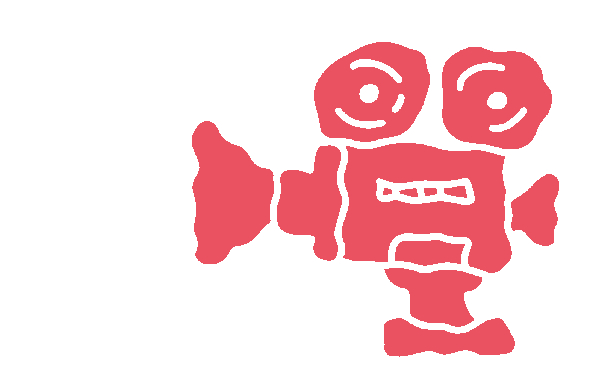
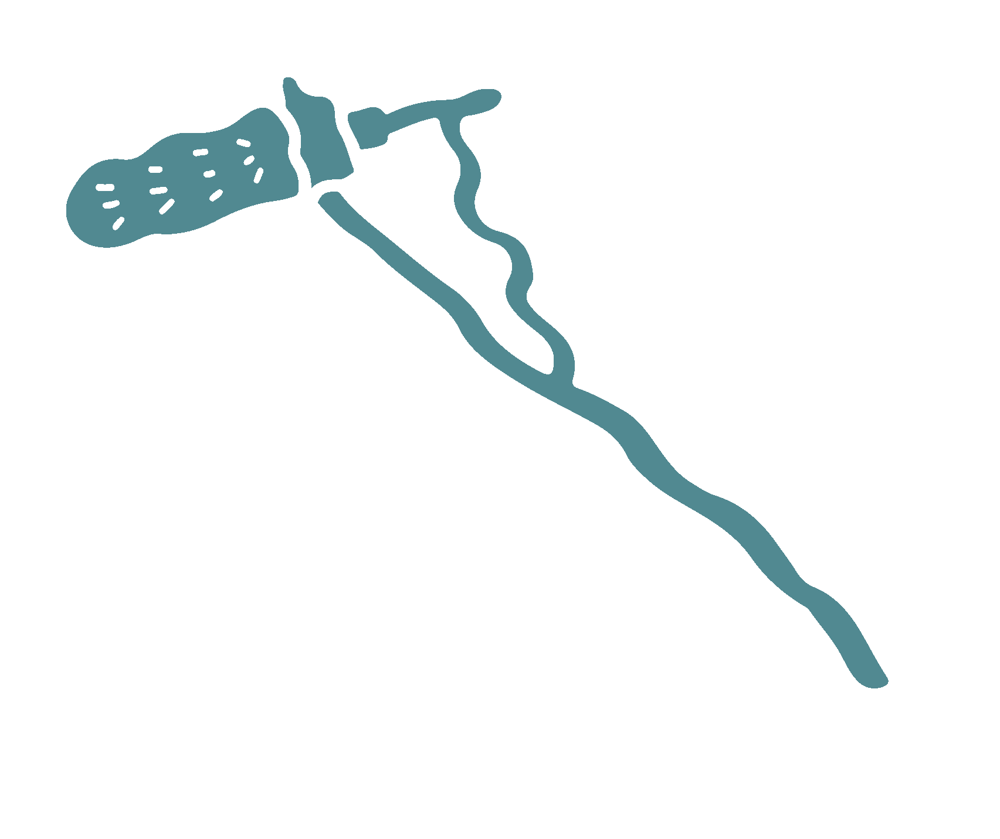
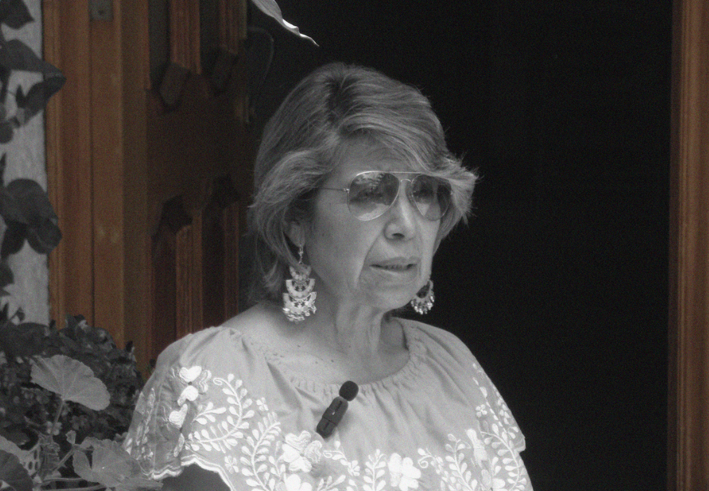
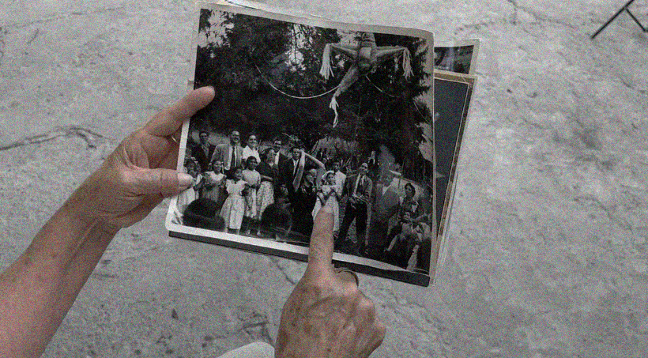
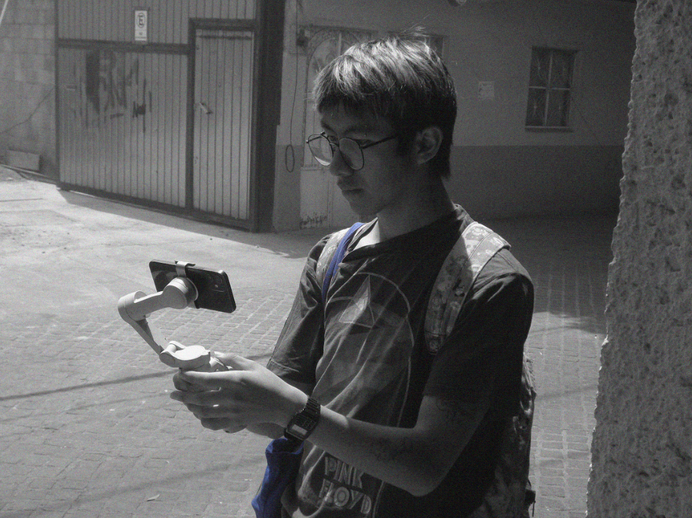
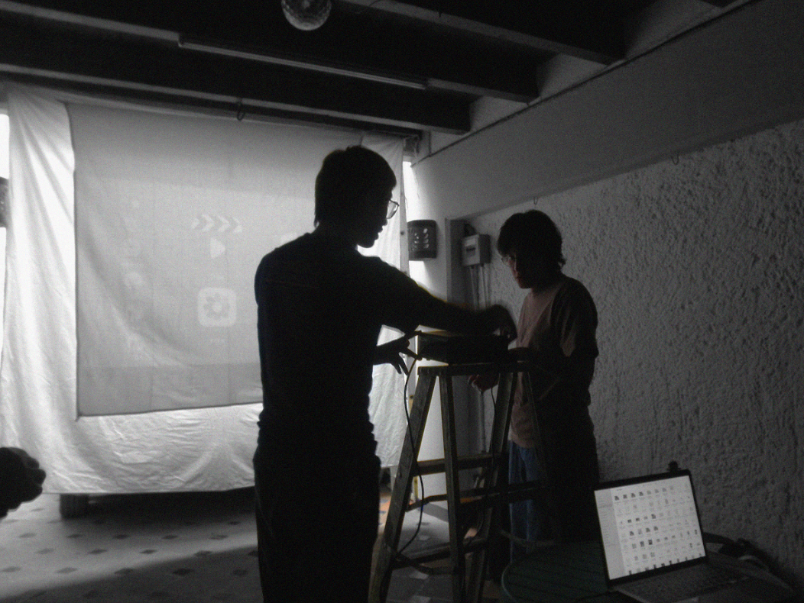
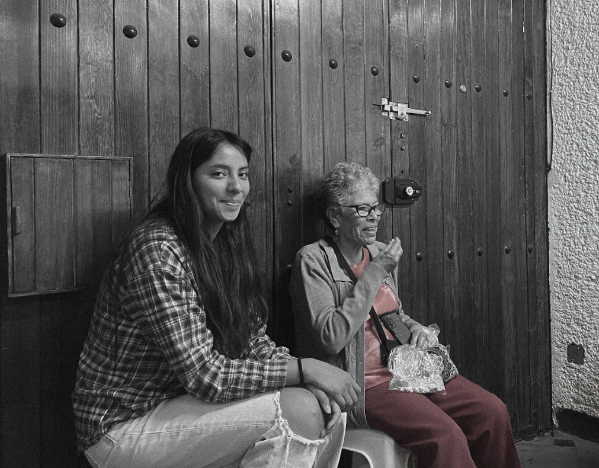
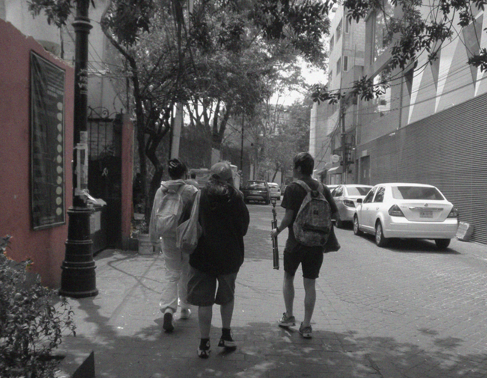
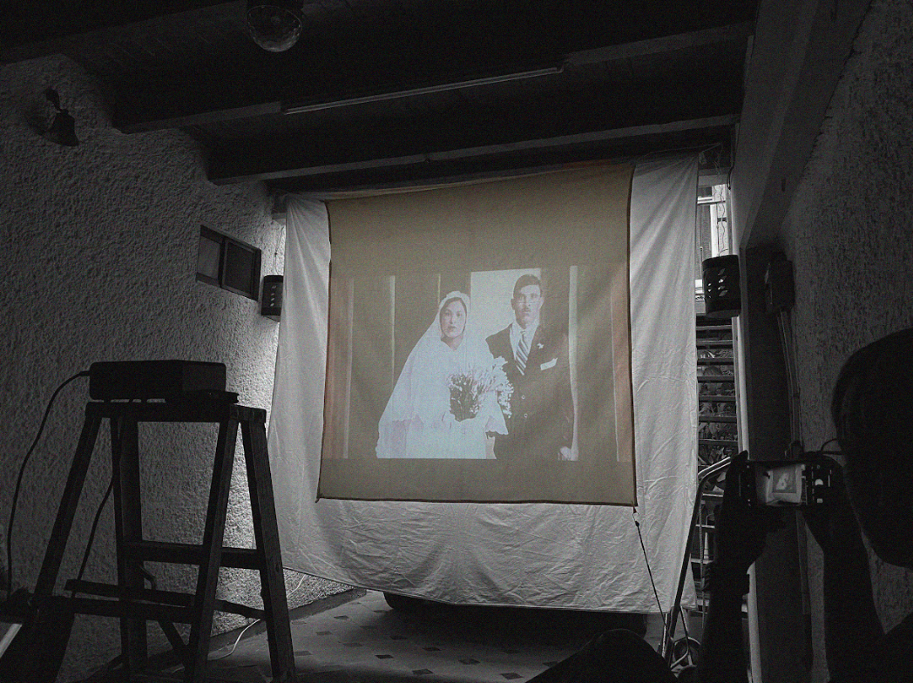

Documental

Este documental busca capturar en video las historias y testimonios de los habitantes, junto con imágenes que ayuden a representar sus memorias y a visibilizar su lucha ante una audiencia más amplia.
Sobre la pieza
El video funciona como un dispositivo de escucha y registro. Reúne imágenes, voces y presencia territorial para dejar constancia de una experiencia colectiva en transformación.
Claves del documental
Testimonios
Memoria local
Resistencia
Registro audiovisual






